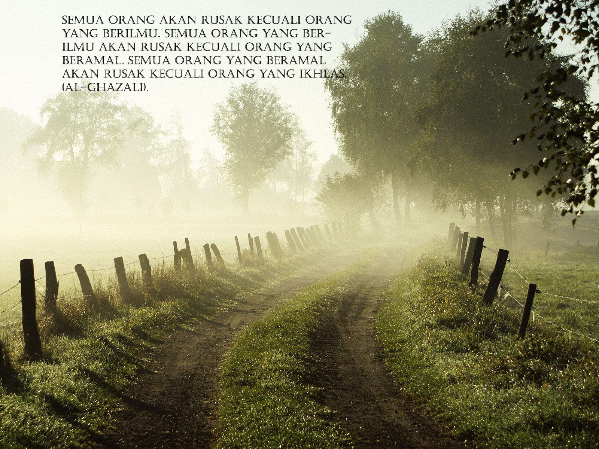

Sebuah gambar  di antara teks
Sebuah gambar di antara teks
Sebuah gambar di antara teks
perhatikan bahwa default pengaturan adalah botttom (diletakan di bagian bawah)
Sebuah gambar di antara teks
Sebuah gambar di depan teks
Sebuah gambar dibelakang teks